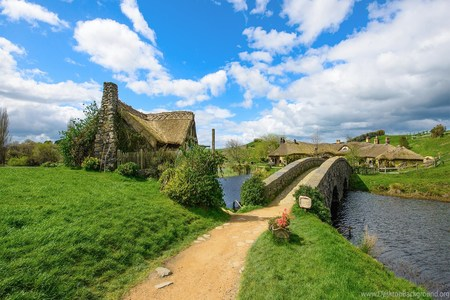
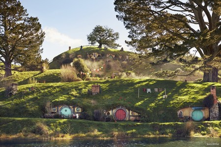
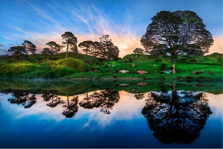
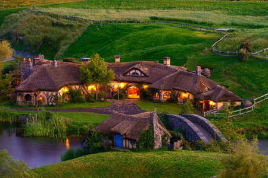
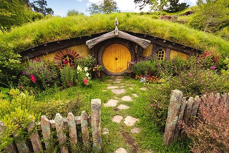
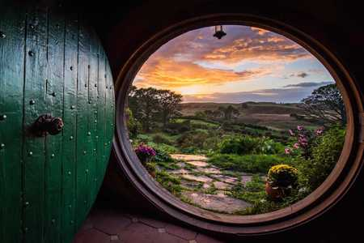
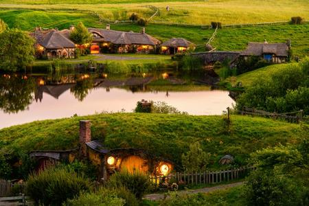

Hobbitton
Hacia finales de la década del ’90, en Nueva Zelanda, el director cinematográfico Peter Jackson llevó adelante la construcción de uno de los sitios más anhelados por los amantes del cine y los viajes: Hobbiton, tierra de Frodo y Bilbo Bolsón, los hobbits más famosos de la gran pantalla. Entre las colinas del pueblo de Matamata, Peter Jackson, el director de la trilogía El Señor de los Anillos, encontró el lugar perfecto para crear en tamaño real la tierra de los Hobbits.
Los paisajes de Nueva Zelanda fueron perfectos para montar los diferentes escenarios de la trilogía de Tolkien ya que es un país favorecido por cadenas montañosas, ríos de corrientes fugaces, fiordos y volcanes a punto de activarse a cada instante. Cada recorrido por las carreteras que unen los puntos más increíbles de la Isla Norte o la Isla Sur es una fotografía viviente que invoca a través su paisaje la historia de Frodo y sus secuaces.
Hobbiton Movie Set nace tal y como se encuentra hoy en día, para ser visitado por los fanáticos de Tolkien de todo el mundo a partir de 2009, cuando se reconstruyó el pueblo para la filmación de la película El Hobbit. Al finalizar las filmaciones de la saga, el set fue desarmado.






